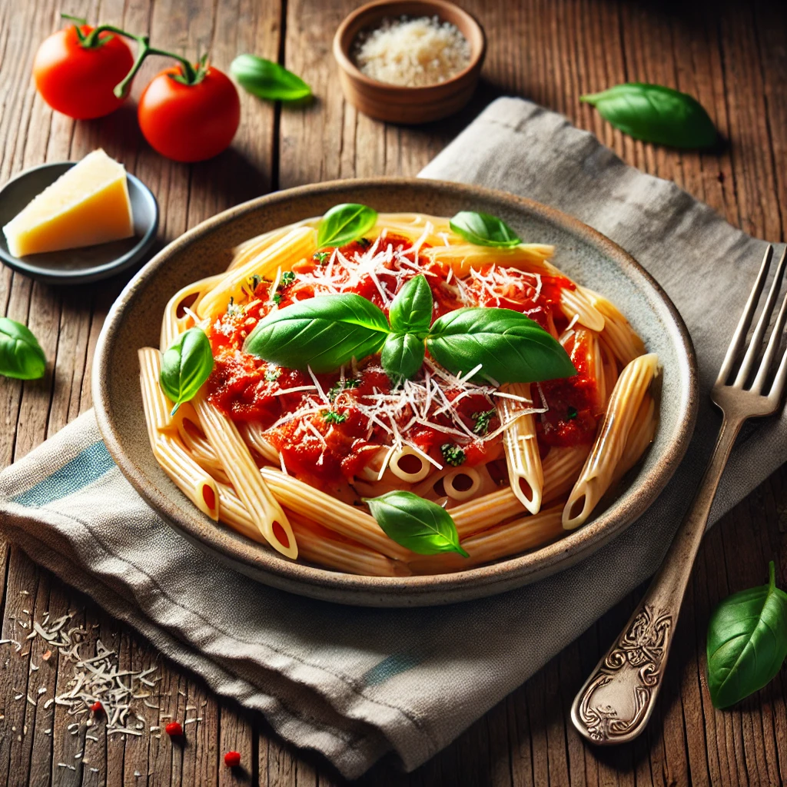

Go back to the homepage
Pasta

Pasta is a timeless dish enjoyed worldwide, offering a perfect balance of comfort and flavor. This classic pasta recipe features al dente noodles coated in a rich, savory tomato sauce, enhanced with aromatic herbs and a hint of garlic. A sprinkle of grated Parmesan cheese and fresh basil leaves add the finishing touch, bringing out the dish’s full flavor.
Ingredients:
- 250g pasta (spaghetti, penne, or your choice)
- 2 tablespoons olive oil
- 2 cloves garlic, minced
- 1 can (400g) crushed tomatoes
- 1 teaspoon dried oregano
- 1 teaspoon dried basil
- Salt and black pepper to taste
- ¼ teaspoon red pepper flakes (optional)
- ½ cup grated Parmesan cheese
- Fresh basil for garnish
Instructions:
- Cook the pasta according to the package instructions until al dente. Drain and set aside.
- Heat olive oil in a pan over medium heat, then sauté the garlic until fragrant.
- Add the crushed tomatoes, oregano, basil, salt, and pepper. Simmer for 10-15 minutes, stirring occasionally.
- Toss the cooked pasta into the sauce, ensuring it's well coated.
- Serve hot, topped with grated Parmesan cheese and fresh basil.
Enjoy your delicious homemade pasta! 🍽️